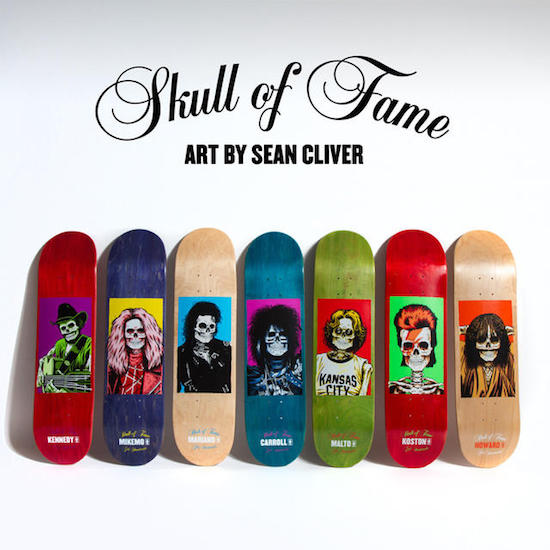
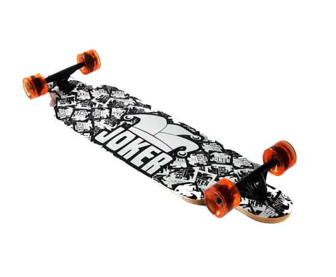
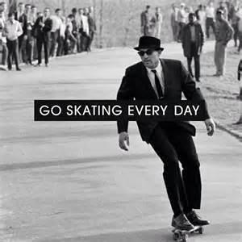

滑板是許多潮流型男必備的街頭玩物，近年來影劇圈好多名人同時迷上滑板運動，從韓團Super junior-M的成員Henry、BigBang的GD<和太陽，以及Teen Top成員創造，到去年貝克漢的大兒子布魯克林(Brooklyn Beckham)也被拍到與超殺女克蘿伊摩蕾茲(Chloë Grace Moretz)滑板約會，就知道滑板運動有多夯。
滑板也有不同種類，分為三種類型，技術板(Skateboard)、長板(Longboard)以及交通板，也稱為膠板(Cuiser board)，雖然外觀上面只有一些微妙的差異，但三種板型適用的道路、特性及適合的玩家類型都不盡相同唷！
形狀頭尾對稱，通常是以雙頭翹板的形狀呈現，寬度約二十公分，長度約八十公分，材質通常以木頭為主，適合於滑板場、平地滑行。都稱作技術板，這類板型也確實能夠做出較多花式滑板的特殊技巧，適合喜歡練習翻跳、極限運動的板友，布魯克林及克羅伊摩蕾茲滑動的也是屬於這類板型。
藝術家Sean Cliver創作的滑板作品「骷髏名人堂」，以七位知名音樂人，包括John Lennon、David Bowie、Michael Jackson、Eddie Van Halen 等等死去後白骨應該呈現的模樣與風格與潮流滑板融為一體，打造全新的滑板時尚，圖中的滑板樣式也是以技術板為主。
長板顧名思義，最大的特徵就是其長度較長，大約落在110至115公分左右，材質與技術板相同，也以木頭為主，這種板型的穩定度較高，但同時也需要較強的控板技術，適合喜歡追求速度感的玩家嘗試，滑行地點為坡道、大片空地。
這類板型還有另外一個特徵，就是反向式輪架的設計，看起來像是裝反的輪架外型，實則提供了更強大的抓地力及穩定性，因此長板非常適合各種刺激的玩法，例如山間小路上的全速衝刺，或是在高低差明顯的坡道上享受奔馳的感覺，絕對會比起技術板帶來更多挑戰性。
但也因為難度較高，建議初學者先從交通板、技術板開始練習控板的能力，其後再來挑戰長板，技巧純熟以後，長板帶來的穩定性與近似衝浪的刺激程度，絕對能夠滿足已經成為滑板達人的你。
之所以稱為交通板，是因為這類的板型比較輕巧，易於攜帶，因此非常適合當作日常的代步工具，膠板的名稱則是因為Cuiser board的主要材質為塑膠，這也是它相對於長板與技術板，較為輕巧的主因。視覺上區分的方式為板型頭尖尾平，板身有凹槽，長度與技術板相當，但寬度較寬。
大家一直在提倡節能減碳、減少交通工具使用的概念，滑板完全就是型男出門卻不想一直走路的完美選擇，不僅可以愛地球，也是練習平衡感的好幫手，趕快入手一個有個人風格的滑板，在初秋微風中繼續有型下去吧！